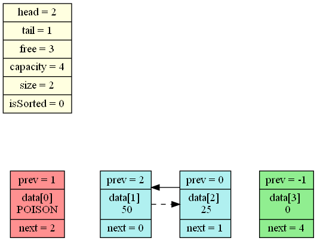
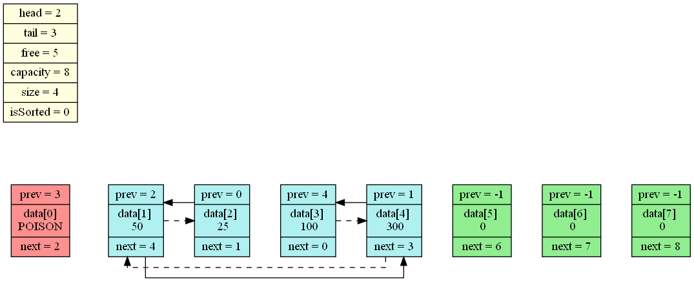
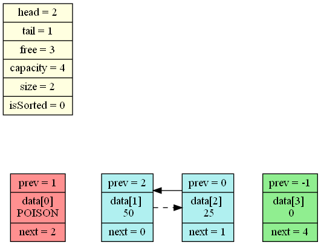
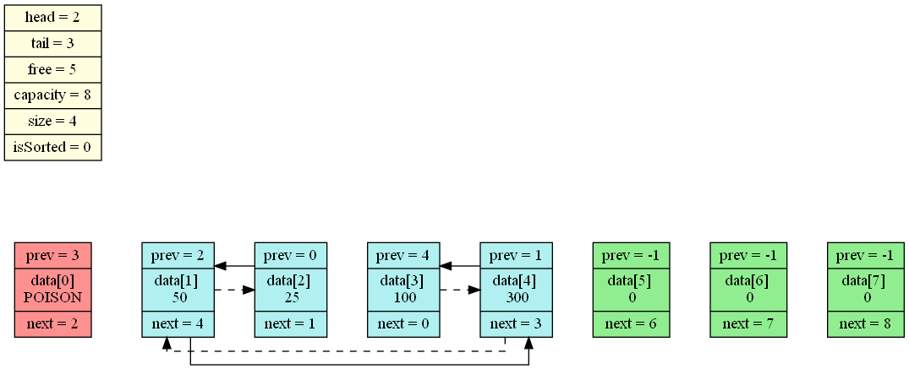
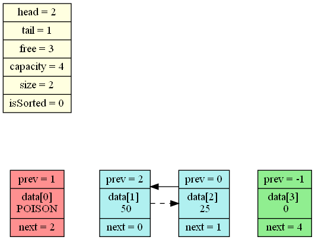
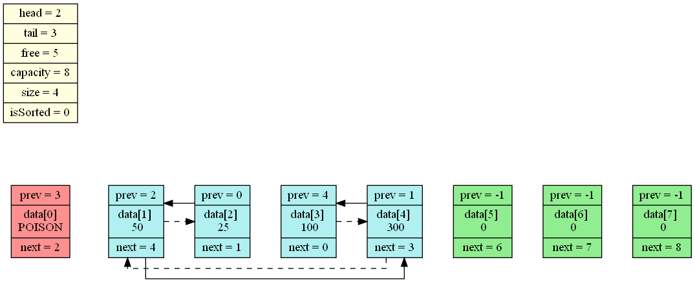
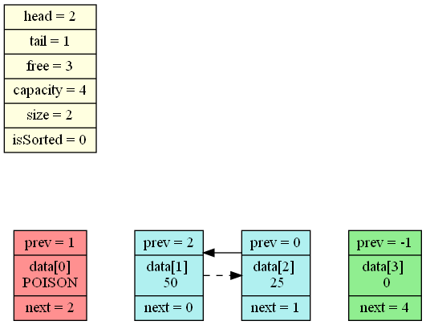
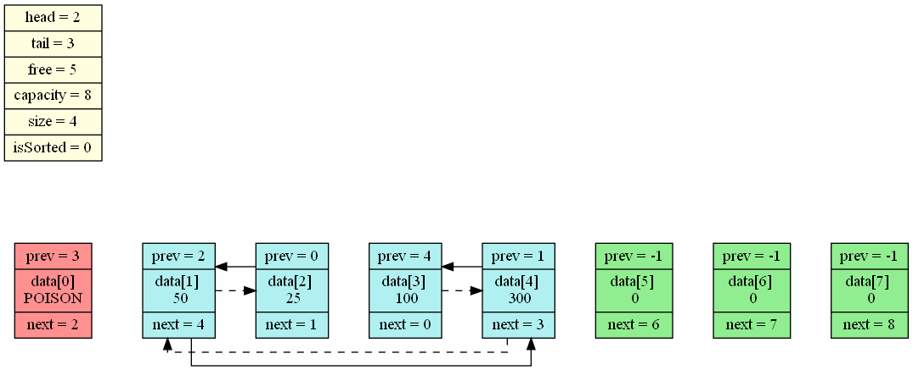
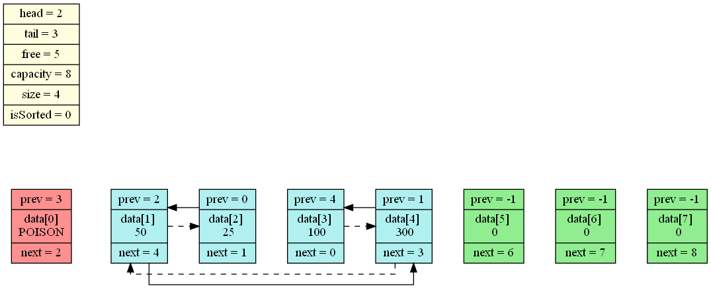
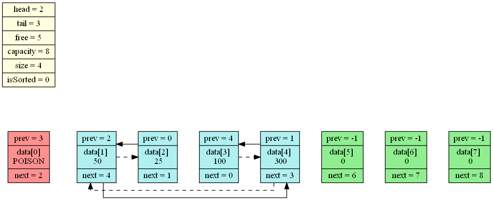

PushBack( 15 ) PushBack( 25 ) Remove( 1 ) Insert( 2, 50 ) Insert( 1, 100 ) Insert( 1, 300 ) ListLinearize() ListPopBack( 1000 ) ListLinearize()
PushBack( 25 ) Remove( 1 ) Insert( 2, 50 ) Insert( 1, 100 ) Insert( 1, 300 ) ListLinearize() ListPopBack( 1000 ) ListLinearize()
Remove( 1 ) Insert( 2, 50 ) Insert( 1, 100 ) Insert( 1, 300 ) ListLinearize() ListPopBack( 1000 ) ListLinearize()
Insert( 2, 50 ) Insert( 1, 100 ) Insert( 1, 300 ) ListLinearize() ListPopBack( 1000 ) ListLinearize()
Insert( 1, 100 ) Insert( 1, 300 ) ListLinearize() ListPopBack( 1000 ) ListLinearize()
Insert( 1, 300 ) ListLinearize() ListPopBack( 1000 ) ListLinearize()
ListLinearize() ListPopBack( 1000 ) ListLinearize()
ListPopBack( 1000 ) ListLinearize()
ListLinearize()